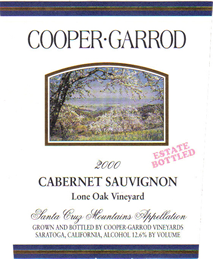

|
North America >
USA >
California >
Santa Clara
>
Cooper Garrod
>
Lone Oak Cabernet Sauvignon

2000 Lone Oak Cabernet Sauvignon
Cooper Garrod Estate Vineyards
Saratoga, CA
Price: $28
750
ml
No stars
2006 tasting - It's hard to screw up a Cab, but they've done it. A good sweet bouquet masks the terrible taste.
More about Cabernet Sauvignon.
|
|